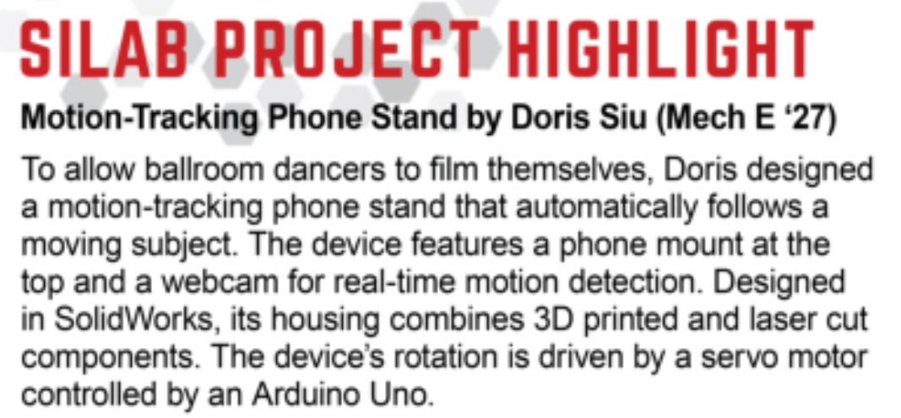
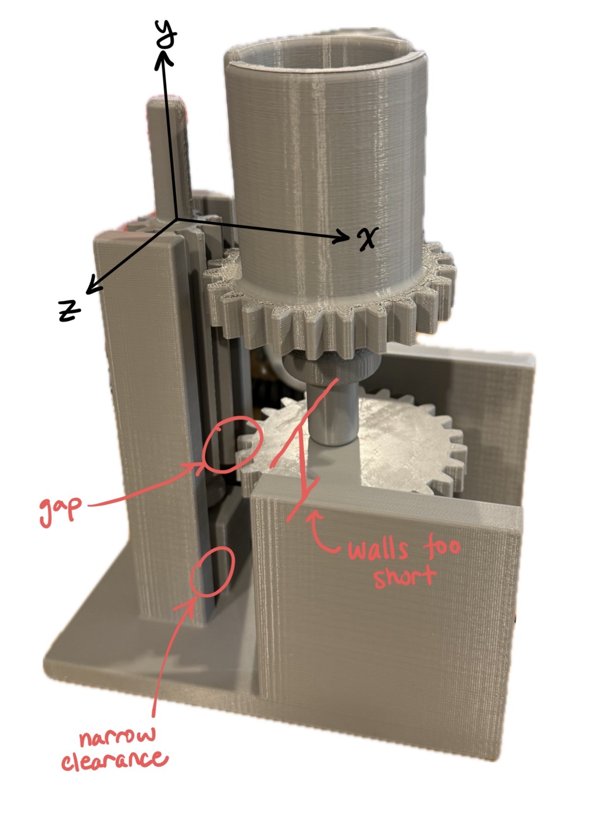
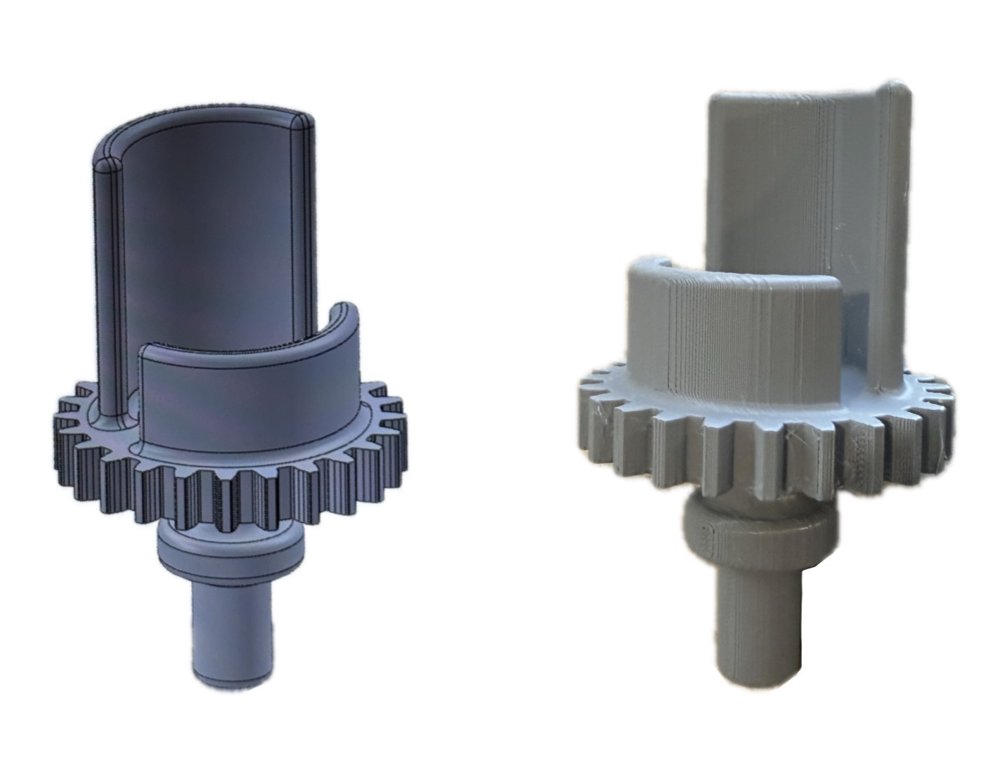

Phone Holder v1.0
August 2025
Recognition
Project featured in Boston University College of Engineering BTEC-SILab Newsletter (Sept 2025 Edition)


Objectives
| Objective | Metric |
|---|---|
| Portability | Easily transportable to practice rooms or competitions |
| Tracking Precision | ±10° angular deviation from subject position |
| Budget | < $150 BOM |
| Stability and Load Support | Support weight of standard cellphone + any accessories, approx. 250g, and ensure filming quality when rotating |
| Autonomous | Untethered & able to identify/follow subject without manual control |
System Architecture
The operation begins with the webcam capturing the position of the subject, which is digitized using Computer Vision. The Python program then maps the subject’s position into rotational degrees and the data is transmitted into an Arduino via serial communication. This gives direction to the servo motor as to how far to turn. To prevent the weight of the phone from straining the motor, the servo is connected to a driver gear that engages a series of idler gears on a vertical shaft. This gear setup ultimately turns a driven gear that has a phone holder attached.
The plan was to have the device be autonomous and operate untethered (I will explain later in the results why this never happened for v1), which was supposed be achieved by using a Raspberry Pi 5 and 9V batteries. The housing is fabricated from 3D-printed PLA and laser-cut 6mm acrylic parts. To account for phone accessories (such as the PopSocket on the back of my phone) and ensure the phone sits securely on the stand, I created a dual hollow-hemisphere holder design (as shown in Figure 2).
Troubleshooting
| Challenges with Initial Mockup | Actions |
|---|---|
| Vertical misalignment in y-axis between driver/driven gears and 2 small idler gears. | Increased idler gear face width, turning dual-idler setup to 1 elongated idler gear, so the driver and driven gears would not lose contact with the idlers due misalignment in y-axis. |
| Housing walls had narrow clearances, were too short, and had small surface area on top, which prevented secure attachment of laser-cut plates and interfered with gear rotation (Figure 1). | Adjusted walls to have more internal clearance, height, and top surface area to accommodate laser-cut interface and gear rotation. |
| Gap between driven gear and small gear in x axis (Figure 1). | Remeasured and corrected dimensions in Solidworks so the gears line up. |
| Holder design featured asymmetric wall heights: 1 wall shortened to prevent potential occlusion of the phone's wide-angle camera lens. But this reduced mechanical contact area, leading to instability during high-speed servo tracking (Figure 2). | Conducted Field-of-View audit using the physical mockup & discovered full-height wall on both sides would not interfere with the camera's optical path; Redesigned holder with symmetrical wall heights. |

Figure 1: Initial mockup with defined axes and challenging parts pointed out.

Figure 2: Initial hollow-hemisphere holder design with asymmetric wall heights (CAD and mockup).
Result & Discussion
Metric Achievements
- The combination of webcam, computer vision, Arduino, and servo motor achieved the effect of motion-tracking I planned.
- The phone holder turned with subject within ~6ft; however, it does not function well when there are other moving subjects around that distracts it from the main subject I wish to capture.
- The phone and its accessories are held securely in the dual-hemisphere holder design. The video filmed by the phone in the stand is not shaky and is of quality.
- The project is completed within budget.
Video: Demostration of motion-tracking phone holder function
What Didn't Worked
- University wifi had a firewall that disabled Raspberry Pi usage, so the device never became fully autonomous as I defined it.
- Later discovered that Raspberry Pi 5 only accepts 5V power input. So even though 9V battery works for powering Arduino Uno, I needed another method for the whole system to run.
- Angular deviation roughly ±20° from centriode of moving object, which is 10° more than my original goal.
- The housing design is too bulky and “boxy” for transport.
Lessons I learned
- Importance of assembly before printing out the physical part → helps visualize the shortcomings of my design before physically producing the parts just to realize they don't fit together properly and wasting materials
- I was sketching and printing laser cut parts from Adobe Illustrator; but I can sketch laser cut parts in CAD too → better visualization when assembling the parts together; sketch can also be exported as DXF/DWG to be laser cut
- Importance of checking electronic specs. This way I would've found out sooner that 9V battery alone would not work to power the system.
Future Improvements
- Design more concise and rounded housing: The current device is too big and all the components are exposed, making it difficult to carry around. I would make a smaller enclosure and conceal internal electronics, allowing it to be more transportable. Additionally, I would transition to a more rounded design to make the device more ergonomic and to increase structural integrity.
- Use a USB power bank (with 5V output) or other 5V sources to power Raspberry Pi and Arduino.
- Possibly install more webcams around the device to achieve a 360° tracking.